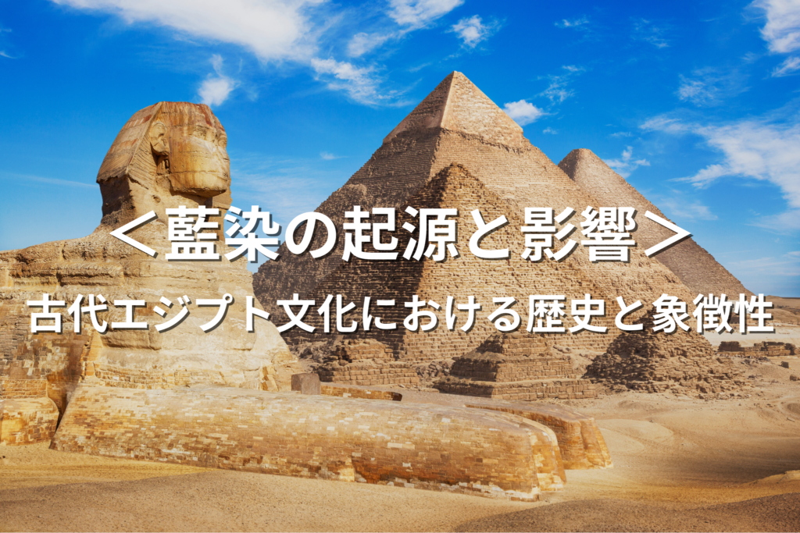
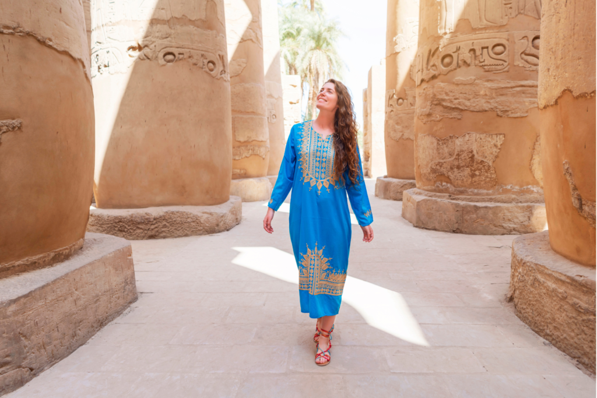
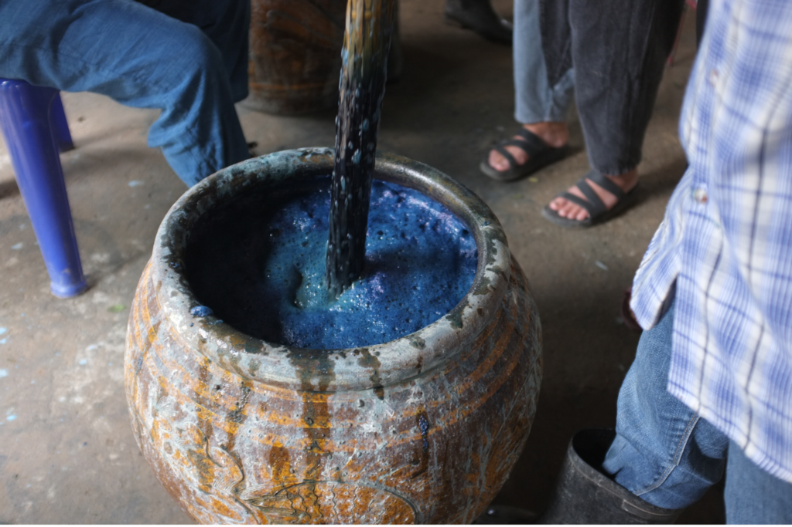

藍染の起源と影響~古代エジプト文化における藍の歴史と象徴性~

古代エジプトにおける藍染は、衣服、装飾品、そして宗教的儀式に深く関わっていました。エジプト人は色とその象徴性を重視し、藍色は天空や神秘、創造の力を象徴していたとされます。以下は、古代エジプトでの藍染の使い方とその歴史、生活への影響についての詳細です。
藍染の使い方と象徴性

- 衣服: 上流階級や王族は、ステータスや権力の象徴として、藍染めされた衣服を着用していました。これらの衣服はしばしば複雑なデザインやシンボルが施され、所有者の地位や神との関係を示していました。
- 宗教的儀式: 神々への贈り物として、または宗教的な祭事で用いられる衣服や布地に藍染が用いられました。藍色は天と水を象徴し、創造と再生の力を持つと考えられていたため、これらの儀式では非常に重要な色でした。
- 装飾品と美術: 藍染は壁画や装飾品、さらにはミイラの包帯にも使用されていました。これらの用途では、藍色が永遠性や守護の力を象徴すると考えられていました。
生活への影響

古代エジプト社会において、藍染は単なる色素を超えた存在でした。それは文化的および宗教的な意味合いを持ち、エジプト人の日常生活、信仰、そして死後の世界への観念に深く関わっていました。藍染めされた布は、日常生活で使われることは少なく、主に特別な場面や上流階級の人々に限られていたとされます。これにより、藍色は豊かさ、純粋さ、そして神聖さの象徴とみなされるようになりました。
藍染の生産
古代エジプトにおける藍染の具体的な生産方法については、限られた情報しか残っていませんが、おそらく地中海地域から輸入されたインディゴを基にしていたと考えられます。藍染の技術は、他の文明との交流を通じてエジプトにもたらされ、エジプト人はこれを自分たちの文化的および宗教的な文脈に適応させました。
まとめ
古代エジプトにおける藍染は、美術、文化、宗教に深く根ざした重要な要素でした。藍色の衣服や装飾品は、権力、豊かさ、そして神聖さの象徴として使用され、エジプト人の日常生活における色の重要性と象徴性を反映しています。